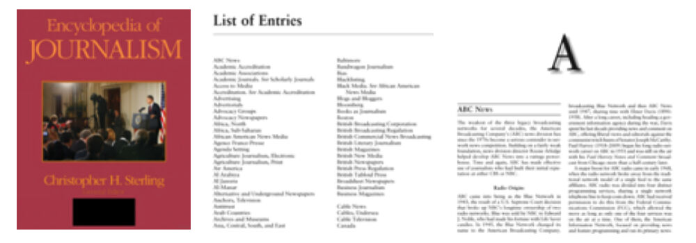
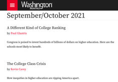
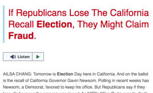

Trainees Edition
Trainers Edition
Trainees Edition
Trainers Edition
Module 13: Sources of Reliable Information
Module Description
The main purpose of this module is to introduce learners to sources of reliable information, in order to help learners recognize and distinguish among different categories of information sources and types of information sources. A secondary aim is to guide trainers using the content of this module to educate their learners.
In accordance with these goals, definitions of the main categories and types of information sources, examples of information sources about news and journalism, and guidelines on how to teach the subject, are covered in this module.
Learners who successfully complete this module will be able to:
- identify and distinguish different categories of information sources (e.g. primary, secondary, or tertiary sources)
- identify and distinguish different types of information sources (e.g. reference sources, books, serials, databases)
- be familiar with some examples of information sources related to news and journalism.
Additionally, trainers who successfully complete this module, will be able to demonstrate an understanding of the guidelines for teaching the subject.
Module Structure
This module consists of the following parts:
- Module Description (objectives, description of the content, and learning outcomes)
- Module Structure
- Guidelines for Trainees
- Guidelines for Trainers (preparation, methods, and tips)
- Content (study materials and exercises)
- Quiz
- Resources (references and recommended sources)
The main objectives of this module, and the description of the content and learning outcomes are explained in the Module Description section. Content includes all study materials and content-related exercises. The quiz provides multiple choice questions for trainees to test their progress.Resources have two components: references, and recommended resources for further study. References is the list of resources cited in the content section; recommended resources consist of a list of supplemental resources, which are recommended reading. Guidelines for Trainees includes instructions and suggestions for learners. Guidelines for Trainers leads trainers through different phases of the training, and provides useful tips to be used when teaching the subject.
Guidelines for Trainees
Learners are expected to read the text, and do the exercises. They may consult recommended resources for further information. After completing study of the content, learners are strongly advised to take the quiz to evaluate their progress.
Guidelines for Trainers
Guidelines for Trainers includes suggestions and tips for trainers on how to use the content of this module to train learners about sources for reliable information. Trainers can revise the study material if needed.
Preparation
Preparing a presentation (PowerPoint/Prezi/Canva) which is supported by visual materials is strongly suggested. It is also suggested that examples of sources (e.g. Data Turkey, LETA, LURSOFT "Laikrakstu bibliotēka"), and exercises be adapted to issues which are more familiar to the target group. It also helps to maintain the attention of learners. During the course, a real time use of different sources is also strongly suggested.
Getting Started
A short quiz (3 to 5 questions) in Kahoot or Mentimeter can be used at the beginning for engaging participants in the topic. The quiz can also be used as a motivational tool, as well as a tool to check trainees’ existing knowledge on the subject. Some examples for questions might be:
- What does primary source mean?
- Can you give an example of a reference source?
- What is a database?
- Is it possible to access the world's major news content gathered from mainstream sources via a single source?
Methods to Use
Various teaching methods can be used in combination with each other during the training. Methods such as:
- Lecturing
- Group work
- Individual work
- Self-reflection
Tips for Trainers
Warming-up
An effective way of involving participants and their learning expectations is to ask a few preliminary questions on the subject (sources for reliable information). For instance, learners might be asked: What is a secondary source? Where can I find historical newspapers? What is the difference between web sources and databases? Also an activity can be conducted as follows:
- prepare different search topics requiring the use of different kinds of sources (e.g. reference sources, databases, books, serials, standards)
- ask participants to choose appropriate and reliable sources for these topics
- ask participants to share and explain their choices with other participants
- ask participants to use the sources chosen by themselves, in order to answer the research questions
- ask participants if they are satisfied with the results
- ask participants if they think these results are reliable
After the activity, make sure that participants are able to understand that there are many different kinds of sources, that different types of sources address different kinds of information, and that not all sources are reliable.
Presenting the Objective of the Lesson
The objective of the lesson (which is to introduce categories and types of sources for reliable information) should be made clear. Following the warm-up questions, it will be easier to clarify the objectives.
Presenting the Lesson Content
While presenting the content, make sure to interact with the learners, and encourage them to participate actively.
Before
- Before the lesson prepare questions for participants to practice, using different sources (determine questions and most appropriate sources)
- Before the lesson decide which sources will be used for practice
During
- At the beginning of the lesson ask participants:
- What is reliable information?
- Why are reliable information sources important?
- What do they know about categories and types of information sources?
- What could be the consequences of not using reliable sources?
- What are the most appropriate and reliable sources to use in order to answer the practice questions?
- While introducing categories and types of information sources:
- Ask participants to give examples of the information needs that we can apply to these sources.
- Make comments on their examples.
Afterwards
- Review and elaborate on the importance of using reliable sources for the acquisition and evaluation of information.
- Make sure participants understand that a variety of sources for reliable information exist, all of which require evaluation.
- Provide new search topics for participants to explore using the sources explained in this module.
Suggestions
- Be sure to support your lessons with practical examples and exercises.
- While providing examples of sources, choose country- or learner-specific sources.
- When you choose examples, make sure that they fit well with the definition of the category and types of sources. Determining if a source is primary, secondary or tertiary might be tricky.
Conclusion
Give a short summary of the lesson, and ask questions which would help underline the most important content and practises that you would like to emphasise. Such as:
- Why is knowing the different kinds of sources important?
- What might happen if we do not apply “reliable” sources?
- Were the participants able to find answers to each of the search topics on the internet?
In the “post-truth world” , being aware of different sources for reliable information will enable participants to satisfy information needs thoroughly and efficiently and protect them from being deceived by false information.
Content: Sources of Reliable Information
Introduction
Today, as a result of the developments in information and communication technologies, the rapidly increasing amount of information, and the diversity of sources that come with it have become one of the biggest problems in terms of access to accurate and reliable information. It is very important in today's information ecosystem that those who create or contribute to content production (such as author, editor, contributor, publisher) are authorities on that subject or field, and that the information and documents presented are correct, objective, and complete, in other words: reliable.
Information is produced and published mostly in electronic media. Everyone can produce and share content very easily and quickly, and access to this content is very easy through networks. For these reasons, access to reliable sources is paramount. Because as both the content and the number of resources increases, it becomes more complex and difficult to select and evaluate relevant and correct information. Different concepts that enter our lives, such as false information, disinformation, misinformation, fake news, and information pollution are also results of the existing information ecosystem.
It is very important that those who create the content or contribute to content production are authorities in that subject or field, and that the information and documents presented are correct, objective, and complete, in other words, reliable. Today, it would not be wrong to say that a person's information-seeking behaviour is generally in the form of searching the web. In these environments (networks), it is not easy to find “reliable information”, or to select reliable information among accessed information or information sources. The information sources one chooses/apply is of great importance, in order to meet information needs effectively and efficiently, because the validity and reliability of the accessed information depends on the source. At the same time, the source consulted changes according to the information needed. For example, general information sources will be more useful; however, if we need more detailed or specialised information, subject specific sources may be more useful. For this reason, it is of great importance to understand different types of sources.
Information sources may be categorised in various ways, on the basis of their access properties (primary, or secondary), content (scholarly, or popular), the media (printed, or non-printed), publication formats (periodical, or non-periodical), producer (government publications, corporate publication, trade publications, or grey publications), time (current, or historical) etc.
In this section, different types of information sources will be explained, and examples given.
Categories of Information Sources
Information sources have developed and diversified their forms from the past to the present day. According to the different ways of processing information content, information sources can be categorised as primary, secondary, or tertiary information sources. Sometimes, information sources are categorised only as primary and secondary sources.
Primary Information Sources
“Primary sources are materials in a variety of formats, created at the time under study, that serve as original evidence documenting a time period, event, people, idea, or work. Primary sources can be printed materials (such as books and ephemera), manuscript/archival materials (such as diaries or ledgers), audio/visual materials (such as recordings or films), artefacts (such as clothes or personal belongings), or born-digital materials (such as emails or digital photographs)” (ACRL RBMS-SAA, 2018, p. 11-12).
Examples of primary information sources are: academic journals, archived materials, books, conference proceedings, dissertations and theses, government documents, patent specifications, product samples, science and technology reports, and technology standards etc.
Primary sources which contain original, firsthand information are important sources for researchers. They are also indicators of the growth or development of a discipline. Using primary sources may not be easy, because the format of a source may be unique, and unfamiliar to the user (ACRL RBMS-SAA, 2018). Secondary sources (sources which comment on primary and/or other secondary sources) (ACRL RBMS-SAA, 2018, p. 13) aid when using primary sources.
Secondary Information Sources
Secondary sources differentiate themselves from primary sources by addressing primary sources through criticism, commentary, or analysis (ACRL RBMS-SAA, 2018, p. 13). Secondary information sources:
- describe, explain, analyse or evaluate the contents of primary information sources,
- discuss, or criticise the proof, justification, or reason given in the primary information sources,
- rearrange or repackage the contents of the primary sources according to the needs of use (Chatterjee, 2017, p. 11).
Secondary information sources include: abstracts, bibliographies, catalogues, guides, indexes, profiles, and subject reports, among many other source possibilities.
Tertiary Information Sources
These kinds of sources are based on primary and secondary information sources. Tertiary information sources consist of the research results generated from a comprehensive analysis and synthesis of primary and secondary sources. Annual commentaries, guides, handbooks, reports, reviews, and summaries of specific subjects, or purposes, can be given as examples of tertiary sources (Li, 2014).
Types of Information Sources
There are different types of information sources. The scope and depth of information changes according to the type of source. Scope refers to the breath of the subject or topic. A source which has a broad scope covers many topics, while a source with a narrow scope may cover only one specific aspect of a topic. Depth is the amount of information on a topic given in the source (Lanning, 2012, p. 13). Scholarly information sources, with differing scopes and depths, are generally composed of the following types:
Reference Sources
These sources “are designed to bring you quick facts or provide a short overview of a topic”, They can provide basic understanding of a topic, and so can be very helpful for research. They are very valuable sources at the beginning of a search. Reference sources are always secondary information sources. They can include popular or scholarly information, current or historical information, and are generally written or edited by more than one person. They have a very broad scope, and take longer to create than other types of sources (Lanning, 2012, p. 14).
Almanac
An almanac is “an annual compendium of useful data and statistics relating to countries, personalities, events, subjects, etc.” (Welsh & Wright, 2010, p. 41).
Example: World Almanac and Book of Facts
|
|
|


Source: www.amazon.com
Bibliography
Bibliography is “a list of works, documents, and/or bibliographic items, usually with some relationship between them (e.g., by a given author, on a given subject, or published in a given place), and differing from a catalog in that its contents are not restricted to the holdings of a single collection, library, or group of libraries” (Levine-Clark & Carter, 2013, p. 29). It helps the users to identify, locate, or select material.
Biography
Biographies include information about a person’s life. This information may cover anything, such as education, birthdate, or their careers (Markey, 2019, p. 75-76).
Example: Marquis Who’s Who

Dictionary
A language dictionary is “a collection of entries for acronyms, proper nouns, phrases, or words giving definitions, etymology, foreign-language equivalents, grammar, orthography, pronunciations, regionalisms, synonyms, usage, visual imagery, and/or written-out forms” (Markey, 2019, p. 372). A discipline-based dictionary is “a collection of entries for concepts, events, objects, and overarching topics in a discipline, subject, or field of study, along with definitions and short explanations” (Markey, 2019, p. 368). Some discipline-based dictionaries prefer to use encyclopedia, companion, or reference guide in their titles instead of dictionary (Markey, 2019, p. 78).
Example: The New Shorter Oxford English Dictionary
 |
|
"Vintage German Dictionary Page" by HA! Designs - Artbyheather is licensed with CC BY-NC-ND 2.0. |
"The New Shorter Oxford English Dictionary; The New Oxford Thesaurus of English; The Macquarie Dictionary" by warwick_carter is licensed with CC BY-NC 2.0. |
Directories
Directories give contact information for persons or organisations. They also give some other information such as age, occupation for persons, and founding date, number of employees or contact person for an organisation (Markey, 2019, p. 368).
Example: Foundations Directory, Europa World of Learning
Encyclopaedia
An encyclopaedia is a collection of entries on a variety of topics in a discipline or subject. These entries give background information, definitions, explanations about related topics with a list of references for further reading (Welsh & Wright, 2010, p. 43, Markey, 2019, p. 80). They provide satisfactory and fundamental information about key aspects of a topic or concept.
Example: Encyclopaedia Britannica

Source: Sage Publication
Handbook
A handbook includes critical information, arranged for the quick location of the facts that one might need for a particular field (Levine-Clark & Carter, 2013, p. 124).

Yearbook
A yearbook is an annual publication providing brief, up-to-date information about a country, organisation, discipline, or subject.

Source: https://www.worldpressphoto.org/
Books
Books have greater depth and narrower scope than reference sources. They cover their topic in detail, giving information to a more extensive degree than reference sources. They may be primary or secondary, popular or scholarly, historical or current, information sources. Books may be textbooks or monographs. Textbooks provide basic principles of a subject in a language and a form that is suitable for the students to the relevant education level. It usually contains information useful to a broader public, and no new theories expounded by the author (Chatterjee, 2017, p. 18). A monograph is “a systematic and complete treatise on a particular subject” (Levine-Clark & Carter, 2013, p. 169). Monographs give more detail, including in-depth information, discussion, and detailed explanation of a single topic.
Serials
A publication in any medium issued in successive parts bearing numerical or chronological designations and intended to be continued indefinitely. Serials include periodicals, newspapers, and annuals (reports, yearbooks, etc.); the journals, memoirs, proceedings, transactions, etc., of societies; and numbered monographic series (Levine-Clark & Carter, 2013, p. 229).
Journals
A periodical, especially one containing scholarly articles and/or disseminating current information on research and development in a particular subject (Levine-Clark & Carter, 2013, p. 144).

A periodical for general reading, containing articles on various subjects by different authors (Levine-Clark & Carter, 2013, p. 160). Magazines are generally published for a particular audience. They are not written in an academic style, and they usually do not contain scholarly articles (Lanning, 2012, p. 16).
Example: New Republic, Washington Monthly, New Scientist (The New Scientist covers weekly, recent developments in international science and technology for a general, English-speaking audience, and includes job listings in the relevant fields.)

Newsletter
A serial consisting of one or a few printed sheets containing news or information of interest chiefly to a special group (Levine-Clark & Carter, 2013, p.174).
Example: WHO Newsletter.
Newspaper
“A serial issued at stated, frequent intervals (usually daily, weekly, or semiweekly), containing news, opinions, advertisements, and other items of current, often local, interest” (Levine-Clark & Carter, 2013, p. 175). Usually they focus on current events, for the general public, or popular audience. Articles and reports are usually short. But they are helpful to search for information on politics, business activities, current events, economic statistics, international affairs, news reports, technological progress, and so on. Newspapers are mass media that guide and impact public opinion in today’s information society (Li, 2014, p. 107; Lanning, 2012).
Databases
A database is a way to structure, store, and rapidly access large amounts of information electronically. The key functions of a database are: structure (an organised way to store the information), efficiency (no redundancy), and rapid access (the ability to search and retrieve material from the database as quickly as possible) (Bell, 2015, p.1). The purposes of databases may vary, such as access to the published literature of any discipline; access to the full encyclopaedic array of published literature across a discipline; or access to a particular genre or form, such as journal articles, dissertations, government publications, or newspapers (Markey, 2019, p. 64).
Databases may be classified in different ways: source type (actual source or surrogate); genre (text, media, numeric and spatial data, or a combination of these); selection principle (form-specific content, subject-specific content, or encyclopaedic content); form (reference database, research database); or editorial control etc. (Markey, 2019, p. 65).
Bibliographic databases are surrogate databases. They do not include actual sources, but include summary versions of the actual sources. Bibliographic database records give a description of a specific document, usually retrievable by author, title, subject heading (descriptor), or keyword(s); and usually containing citations, and abstracts or summaries of the documents (Welsh & Wright, 2010, p. 71).
Library, Information Science & Technology Abstracts is an example of a bibliographic database. It provides indexing and abstracting for hundreds of key journals, books, and research reports.
Full-Text databases, provide the complete/full text of the documents, and deliver the full-text document in different formats, such as HTML, PDF.
Newspaper Source Plus is an example of a full-text database. It provides a full-text digital collection of the world's major news content. It includes millions of articles from newspapers, newswires, and news magazines. In addition, it offers television and radio transcripts, and ongoing daily updates from popular news sources (EBSCO, 2021a).

Source: EBSCO, 2021
Citation databases contain information relating to both cited, and/or citing documents.
Web of Science and Scopus are examples of this kind of databases.

Source: WOS, 2021
Numeric and text-numeric databases contain materials, such as raw data sets, research reports, stock market quotations, statistics, and annual reports. These types of databases might be used for tasks such as economic forecasting, or market research (Fulton & McGuinness, 2016, p. 126). Data Turkey is an example of this kind of database. It provides access to economic, social, sectoral, and regional data produced by public institutions and private organisations in Turkey.
Databases versus the Web
A comparison of databases versus web sources was conducted by Fulton & McGuinness (2016, p. 127-128) based on the following topics:
Trustworthiness: Contents of databases are primarily authoritative, scholarly materials which are generally peer-reviewed, and selected by professionals. Web sources provide access to information/documents of which many are not verified or written by qualified professionals. Creators of the documents may not be an authority, or have insufficient knowledge of related topics.
Organisation: Contents of databases are well-organised, and use standardised subject headings, descriptors, and other fields, such as keywords, publication name, etc. Search results are much more efficient and precise. Sources on the web are not organised the way databases are; therefore, to reach all possible relevant documents is not easy.
Search features: Databases offer different search options, such as basic, advanced, or expert, as well as other features, such as saving and exporting search results. For the web, search functions depend on the search engine. They can be basic, or advanced. Generally, web search engines lack the sophistication and flexibility of scholarly databases.
Coverage: Databases provide for an in-depth and wide-ranging coverage of topics. On the web, in-depth information on scholarly topics is problematic, because of the hidden or deep web, which might not be accessible by search engines.
Relevance: Because of the specific content and search features offered by databases, retrieving relevant documents becomes possible. On the web, results are ranked by the search engine’s algorithms. Filtering search results, in order to identify the most relevant documents, can be a challenge on the web.
Currency: Databases are updated regularly (e.g. daily, weekly), and new documents are added. But the web does not have regular updates.
Conference Papers
Conference papers are presented at conferences, seminars, and symposia, etc. The papers or proceedings of these conferences, seminars or symposia are sometimes published as a separate publication, and sometimes as a special issue of a journal. These papers are important, in order to inform oneself about the latest advances and research progress in various academic disciplines.
For example: Proceedings of ISSI 2015 Istanbul: 15th International Society of Scientometrics and Informetrics Conference, Istanbul, Turkey, 29 June to 4 July, 2015
Dissertations and Theses
Dissertations and theses are formal, academic research papers, written as a degree requirement at a university. Generally, dissertations are submitted by doctoral students, and theses are submitted by graduate students. (Li, 2014, p. 105). Dissertations and theses are major sources of primary research output.
Patent Literature
“A patent is an exclusive right granted for an invention, which is a product or a process that provides, in general, a new way of doing something, or offers a new technical solution to a problem.” (World Intellectual Property Organization [WIPO], 2021). Patent literature is a well-structured source for technical and other information. Patents provide information which is generally unavailable in journal articles, or other kinds of sources. Patent literature contains details about new inventions, new products/processes, or industrial designs which have been granted patents (Chatterjee, 2017, p. 25).


Reports
A report is “a separately issued record of research results, research in progress, or other technical studies” (Levine-Clark & Carter, 2013, p. 216).
Some reports are progress reports, and are produced for administrative reasons; some reports are produced on scientific topics, which include scientific and technical information (Chatterjee, 2017, p. 22-23). Technical reports describe and record problems, processes, and results encountered during scientific research, such as lab tests and medical trials. Since these reports do not undergo a formal peer review like other scientific and technical papers, they are considered as informal publications. However, they are important resources for following current research trends and technical issues in different disciplines (Li, 2014, p. 108).
Example: Reuters Institute Digital News Report 2021
2021 Progress Report to Parliament - Report of the Climate Change Committee

Standards
Standards “provide requirements, specifications, guidelines or characteristics that can be used consistently to ensure that materials, products, processes and services are fit for their purpose” (International Organization for Standardization [ISO] CASCO, 2017, p. 1). A standard “could be about making a product, managing a process, delivering a service or supplying materials” (International Organization for Standardization [ISO], 2021a).
They are produced by both national and professional organisations.
Example: ISO 26000 SOCIAL RESPONSIBILITY: “It provides guidance to those who recognize that respect for society and environment is a critical success factor. As well as being the “right thing” to do, application of ISO 26000 is increasingly viewed as a way of assessing an organization’s commitment to sustainability and its overall performance.” (International Organization for Standardization [ISO], 2021b).
Government Publication
Any publication originating in, or issued with the imprint of, or at the expense and by the authority of, any office of a legally organised government or international organisation. Often called government document, public document, or document (Levine-Clark & Carter, 2013, p. 120-121).
They generally refer to laws, regulations, and rules covering areas such as culture, business, diplomacy, the economy, national defence, science, technology, and trade (Li, 2014, p. 106).
Grey Literature
Grey literature is “a general term referring to publications that are published and distributed outside of the mainstream … It encompasses materials such as technical reports, government publications, and white papers” (Levine-Clark & Carter, 2013, p. 121). It can be produced by government, academics, business and industry where publishing is not the primary activity of the producing body (Schöpfel, 2010).
Policy documents, green papers, proposals, white papers, datasets, course materials, white books, working papers may be given as examples of grey literature.
Institutional Repositories
Institutional repositories are “digital collections capturing and preserving the intellectual output of a single university or a multiple institution community of colleges and universities” (Crow, 2002, p. 5). These repositories include different kinds of documents such as published materials (post-print), preprints, working papers, theses and dissertations, research and technical reports, conference proceedings, departmental and research centre newsletters and bulletins, papers in support of grant applications, status reports to funding agencies, committee reports and memoranda, statistical reports, technical documentation, and surveys (Crow, 2002). Generally members of institutions (academics or administrative staff) deposit their own papers to these repositories.
Example: DSpace@MIT
DSpace@MIT is a digital repository for MIT's research, including peer-reviewed articles, technical reports, working papers, theses, and more.
Information sources about news and journalism
In the previous sections, a general introduction to sources of reliable information was made. In this section, examples of some reliable sources for news and journalism will be presented.
Newspaper Source Plus
This database provides a full-text digital collection of the world's major news content taken from mainstream sources. It includes millions of articles (more than 88 million) from newspapers (more than 1,200), newswires (more than 150) and news magazines. In addition, it offers television and radio transcripts (more than 2.1 million) and ongoing daily updates from popular news sources.
It includes sources such as; AP (Associated Press), CNN Wire, PR Wire, UPI (United Press International), Xinhua (China).
It also includes television and radio news transcripts from top sources; ABC News (American), ABC (Australian), CBC (Canadian), CBS News, CNBC, CNN, CNN International, FOX News, MSNBC, National Public Radio, PBS (EBSCO, 2021a).
NewsWires
This database provides near real-time access to top world-wide news from Associated Press, United Press International, CNN Wire, and Business Wire on a continuous basis. This collection includes AP Financial News, AP Top News, AP WorldStream, AP U.S. Politics & Government, AP 50 State Reports, UPI Business, UPI Entertainment, UPI Sports, UPI Top News, and more. (EBSCO, 2021b).
Regional Business News Plus
This database provides extensive coverage for full-text regional business publications from the United States and Canadian provinces. It includes current news from more than 920 full-text newspapers and newswires; more than 40 active full-text, non-open access regional business publications; and more than 2.2 million full-text TV and radio news transcripts (EBSCO, 2021c)
Web News
EBSCO's Web News provides near real-time access to thousands of top news feeds from around the globe. This collection includes over 14,000 feeds covering a range of business and general news topics (EBSCO, 2021d).
Data Turkey
This database provides data about Turkey in different social fields: National accounts (e.g. gross domestic product, general balance of the economy), foreign trade and balance of payments (e.g. exports, imports), prices, interest rates, exchange rates (e.g. oil and gold prices, real estate prices), sector statistics (e.g. agriculture, science and technology), social statistics (e.g. population and demography, education), public finance (e.g. budgetary accounts, cash flow), regional statistics (e.g. social statistics), archives and long series (e.g. prices, labour market) (dataTurkey, 2021).
HukukTürk - Kazancı Hukuk - Lexpera
These databases provide full-text access to the Court of Cassation Caselaw, the Council of State Case Law, the Constitutional Court Case Law, the Court of Jurisdictional Disputes Case Law, E.Ct.H.R. Case Law on Turkey, Legislation of Turkey, Official Gazette of the Republic of Turkey, and other literature such as books, articles about law (HukukTürk, 2021; Kazancı Hukuk, 2021; Lexpera, 2021).
HeinOnline
HeinOnline provides access to more than 3,000 scholarly journals that examine more than a thousand topics. It covers: U.S. federal content (e.g. U.S. Congressional Documents, Immigration Law & Policy in the U.S.), U.S. state content (e.g. Civil Rights and Social Justice, State reports), case law (Canada Supreme Court Reports, Preview of United States Supreme Court Cases), special collections (Legal Dictionaries, Pentagon papers), international resources (History of International Law, Law in Eastern Europe) (HeinOnline, 2021).
Data Planet
Data Planet provides easy access to statistical data. The over 13.5 billion datasets in Data Planet provide immediate access to data, via multiple points of entry, presented in charts, maps, graphs, and table form. The data come from more than 90 sources, including the Bureau of Economic Analysis, the Bureau of Labor Statistics, the Centers for Disease Control and the Prevention, the China Data Institute, the Deutsche Borse Group, the European Commission, the World Bank, and more. Subjects covered by the data include economics, crime, health, population, energy, the environment, government and politics, and more (Data Planet, 2021).
AP Archive
AP Archive is the film and video archive of The Associated Press (AP). It offers over 1.7 million global news and entertainment video stories dating back to 1895, sourced both from AP's own coverage and from other content partners (e.g. ABC News, RTL Germany) (AP Archive, 2021).
ProQuest Historical Newspapers
ProQuest Historical Newspapers is a newspaper digital archive, and contains more than 100 million digitised pages. It includes historical newspaper pages, articles, photos, advertisements, classified ads, obituaries, editorial cartoons, and more (ProQuest Historical Newspapers, 2021).
Dow Jones Factiva
Dow Jones Factiva is a current international news database produced by Dow Jones. It combines over 30,000 sources from 200 countries, in 28 languages, which includes Dow Jones’ suite of trusted business and financial publications: The Wall Street Journal, Dow Jones Newswires, Barron’s and MarketWatch. It offers a wide range of information from newspapers, newswires, industry publications, websites, company reports, and more. The broad range of content provides both local insight and global perspective on business issues and current events – especially with regard to research requiring current information on companies, industries, and financial markets (Factiva, 2021).
Eurostat
Eurostat is the statistical office of the European Union. It provides statistics and data on Europe. It produces European statistics in partnership with National Statistical Institutes and other national authorities from EU member states. It also includes the statistical authorities of the European Economic Area (EEA) countries and Switzerland (eurostat, 2021).
The World Bank
The World Bank provides free and open access to global development data. It offers different resources which have data on a variety of topics: DataBank, Microdata Library, International Debt Statistics, Global Consumption Database, Projects & Operations, Open Finances, World Development Indicators (The World Bank, 2021).
Veri Kaynağı
Veri Kaynağı is a project of İzlemedeyiz (we are watching), which compiles socio-economic data about Turkey from official sources open to the public, and makes it available to all segments of the society. The aim of the study, which is broadcast on verikaynagi.com and social media channels, is to contribute to the spread of a data-based discussion environment, and to raise awareness about access to open data (Veri Kaynağı, 2021).
News Agencies
A “news agency, also called press agency, press association, wire service, or news service, organization that gathers, writes, and distributes news from around a nation or the world to newspapers, periodicals, radio and television broadcasters, government agencies, and other users” (Britannica, 2015).
Anadolu Agency; Agence France-Presse; Associated Press; Press Trust of India; Reuters; TASS; United Press International can be given as an example for the news agencies.
Newspaper Archives
British Newspaper Archive; Gale Historical Newspapers; Google News Archive; Welsh Newspapers Online can be given as an example for the newspaper archives.
Internet Archive
Internet Archive is a non-profit library of millions of free books, movies, software, music, websites, and more. More than 25 years of web history is accessible through the Wayback Machine. It’s archive contains: 588 billion web pages, 28 million books and texts, 14 million audio recordings (including 220,000 live concerts), 6 million videos (including 2 million Television News programs), 3.5 million images, and 580,000 software programs (Internet Archive, 2021).
Exercise
- Use the Newspaper Source Plus database in order to answer the following questions. First, make a search which includes the words “fake news” in the title of the article.
- How many articles did you find?
- What is the source type of the results? (e.g. Newspapers, Newswires, Radio & TV News Transcripts, US Newspapers)
- What are the names of the publications? (e.g. Daily Mail, Hindustan Times, Filipino Post)
- How many articles are published in The Washington Post and The Guardian, respectively?
- Make the same searches on the web, and compare the results.
- Choose a specific topic (e.g. citizen journalism) and give an example of the following sources:
-
- a dictionary that contains a definition of the topic
- an encyclopaedia article related to the topic
- a report related to the topic
- a book related to the topic
- an article from a scholarly journal
Quiz
References
ACRL RBMS-SAA Joint Task Force. (2018). Guidelines for Primary Source Literacy. Retrieved from https://www.ala.org/acrl/sites/ala.org.acrl/files/content/standards/Primary%20Source%20Literacy2018.pdf
AP Archive (2021). Retrieved from http://www.aparchive.com/
Bell, S.S. (2015). Librarian's guide to online searching: Cultivating database skills for research and instruction (4th ed.). Santa Barbara, California: Libraries Unlimited.
Britannica, T. Editors of Encyclopaedia (2015, August 28). news agency. Encyclopedia Britannica. https://www.britannica.com/topic/news-agency
Chatterjee, A. (2017). Elements of Information Organization and Dissemination (Ser. Chandos Information Professional Series). Cambridge, MA: Chandos Publishing.
Crow, R. (2002). SPARC Institutional Repository Checklist & Resource Guide. Scholarly Publishing & Academic Resources Coalition. Retrieved from https://sparcopen.org/wp-content/uploads/2016/01/IR_Guide__Checklist_v1_0.pdf
DataPlanet. (2021). Retrieved from https://dataplanet.sagepub.com/
dataTurkey. (2021). Retrieved from https://datatr.net/main_tr
EBSCO. (2021a). Newspaper Source Plus. Retrieved from https://www.ebsco.com/products/research-databases/newspaper-source-plus
EBSCO. (2021b). Newswires. Retrieved from https://web.b.ebscohost.com/ehost/search/selectdb?vid=1&sid=648e640c-745e-4c02-bc17-700a0c1cb505%40sessionmgr102
EBSCO. (2021c). Regional Business News Plus. Retrieved from https://www.ebsco.com/products/research-databases/regional-business-news-plus
EBSCO. (2021d). Web News. Retrieved from
eurostat. (2021). Retrieved from https://ec.europa.eu/eurostat/
Factiva. (2021). Retrieved from https://about.proquest.com/en/products-services/factiva
Fulton, C., & McGuinness, C. (2016). Digital Detectives: Solving Information Dilemmas in an Online World (1st ed.). Chandos Publishing.
HeinOnline. (2021). Retrieved from https://heinonline.org/HOL/Welcome
HukukTürk. (2021). Retrieved from https://www.hukukturk.com/en
International Organization for Standardization [ISO]. (2021a). Standards. Retrieved from https://www.iso.org/standards.html
International Organization for Standardization [ISO]. (2021b). Popular Standards: ISO 26000. Retrieved from https://www.iso.org/iso-26000-social-responsibility.html
International Organization for Standardization [ISO] CASCO. (2017). An opportunity for collaboration: Standards, conformity assessment, accreditation and insurance. Retrieved from https://www.iso.org/files/live/sites/isoorg/files/store/en/PUB100420.pdf
Internet Archive. (2021). Retrieved from https://archive.org/
Kazancı Hukuk. (2021). Retrieved from https://www.kazancihukuk.com/
Lanning, S. (2012). Concise Guide to Information Literacy. Santa Barbara, California : Libraries Unlimited.
Levine-Clark, M., & Carter, T. M. (2013). ALA glossary of library and information science. (Fourth edition / edited by Michael Levine-Clark and Toni M. Carter.). ALA editions, an imprint of the American Library Association.
Lexpera. (2021). Retrieved from https://www.lexpera.com.tr/
Li, L. (2014). Scholarly Information Discovery in the Networked Academic Learning Environment (Ser. Chandos Information Professional Series). Oxfordshire [England]: Chandos Publishing.
Markey, K. (2019). Online searching: A guide to finding quality information efficiently and effectively (2nd ed.). Lanham, Maryland: Rowman & Littlefield.
ProQuest Historical Newspapers. (2021). Retrieved from https://about.proquest.com/en/products-services/pq-hist-news/
Schöpfel, J. (2010). Towards a Prague Definition of Grey Literature. Twelfth International Conference on Grey Literature: Transparency in Grey Literature. Grey Tech Approaches to High Tech Issues. Prague, 6-7 December 2010, Dec 2010, Czech Republic. Pp.11-26. Retrieved from https://archivesic.ccsd.cnrs.fr/sic_00581570/document
The World Bank. (2021). Retrieved from https://data.worldbank.org/
Veri Kaynağı. (2021). Retrieved from https://www.verikaynagi.com/
Welsh, T.S., & Wright, M.S. (2010). Information literacy in the digital age: An evidence-based approach. Oxford, U.K.: Chandos.
World Intellectual Property Organization [WIPO]. (2021). Patents. Retrieved from https://www.wipo.int/patents/en/
Recommended Sources
Mann, T. (2015). The Oxford Guide to Library Research (4th ed.). Oxford University Press.
Wong, M.A., & Saunders, L. (Eds.). (2020). Reference and Information Services: An Introduction (6th ed.). Santa Barbara, California : Libraries Unlimited.
Recommended Videos
Imagine Easy Solutions. Understanding Primary & Secondary Sources
CSUN University Library. Types of Information Sources